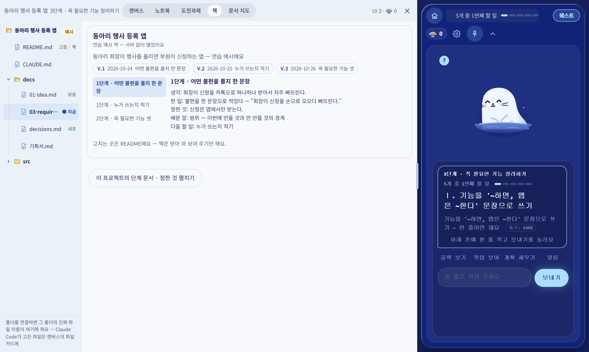
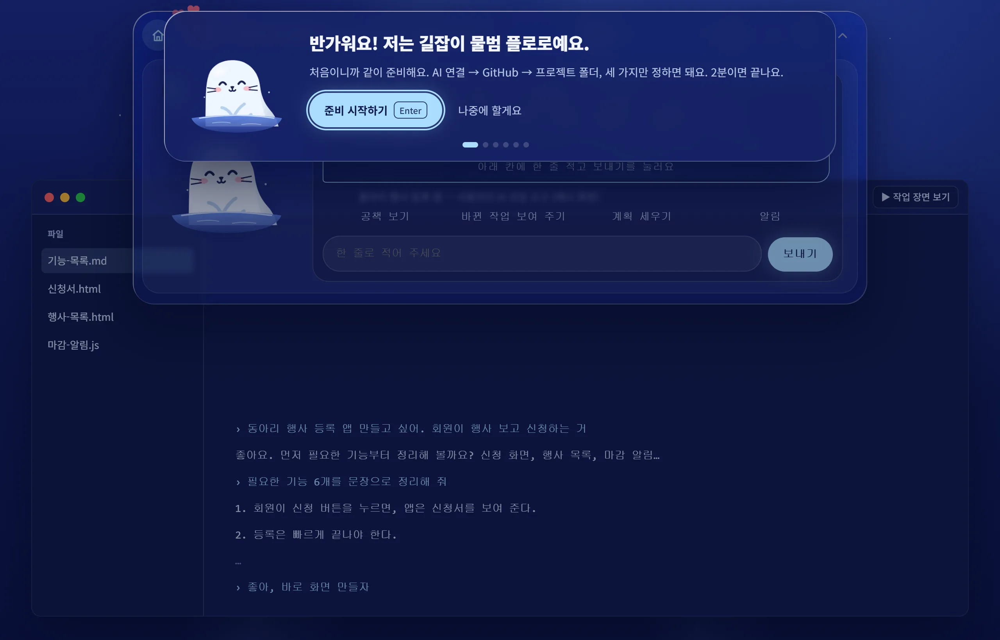
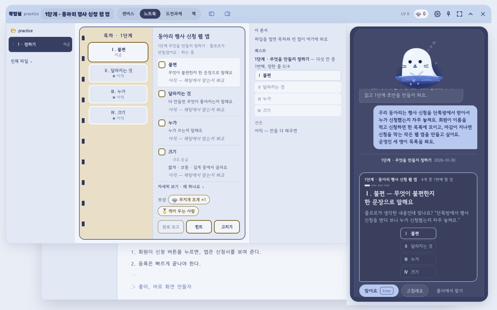
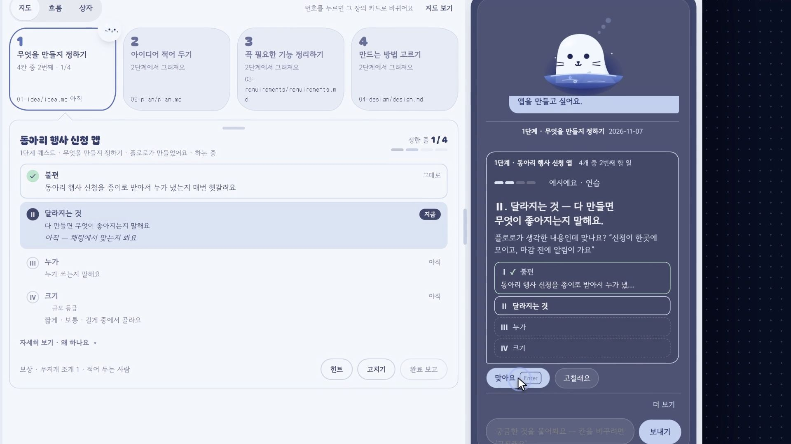
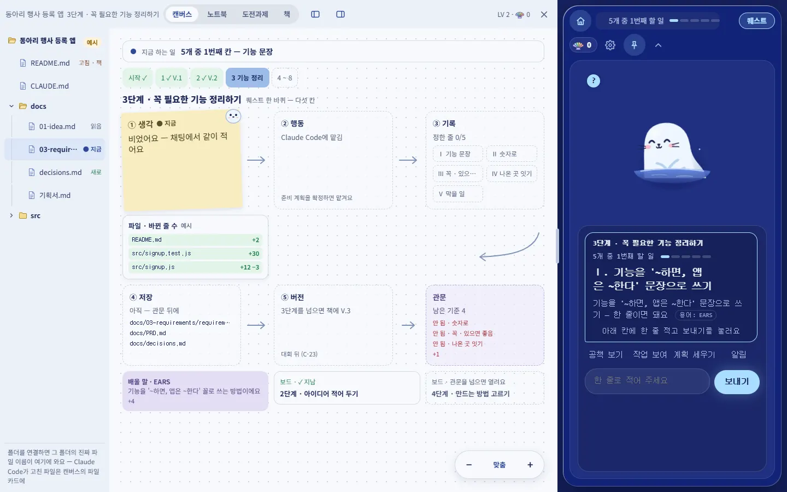
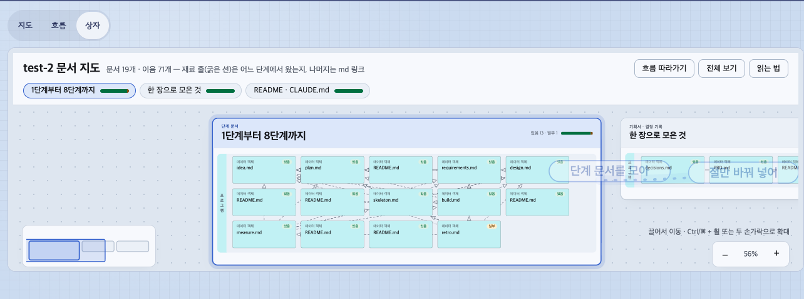
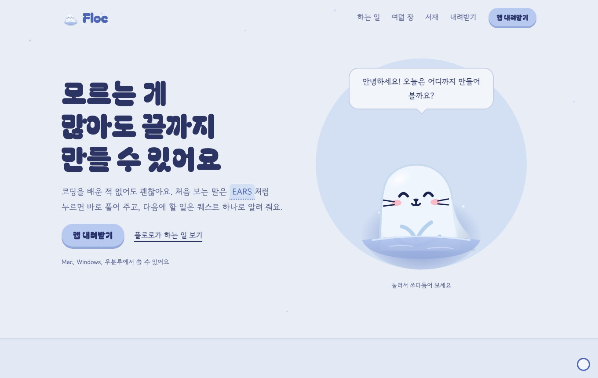
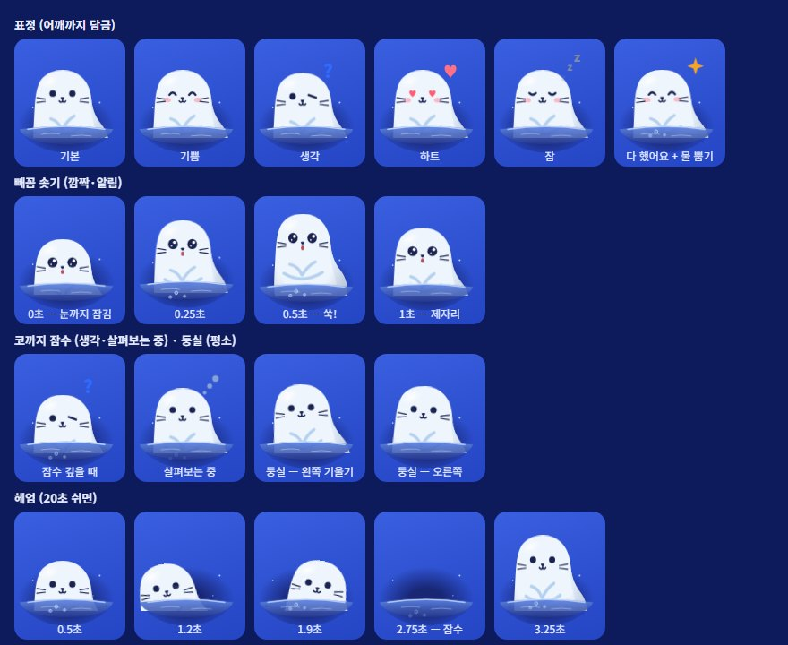

Floe
AI와 만드는 프로젝트,
길을 잃지 않게
지금 어디인지, 다음은 뭔지, 왜 그랬는지를 남기는 길잡이 앱
문제 ① 지금 AI 코딩의 문제
AI로 코딩하는 사람은 해마다 늘었습니다 — 2년 새 70%에서 84%로
AI 도구를 쓰거나 쓸 계획이다 ↑ +14%p
응답자 비율 · 2025 Stack Overflow 개발자 설문(응답 약 3만 명) · 축은 60%부터
요약: AI로 코딩하는 사람은 늘었으나, 이용자의 코드 검증과 무엇을 만드는지 판단하는 능력은 약해지는 추세다
survey.stackoverflow.co/2025/ai · 2023 · 2024 값은 같은 설문의 그해 판 · 2026-11-07 확인
문제 ① 지금 AI 코딩의 문제
그런데 결과를 믿는 사람은 줄었습니다 — 한 해 만에 43%에서 33%로
AI 도구의 결과를 믿는다 ↓ −10%p
응답자 비율 · 같은 설문 · 축은 20%부터
요약: AI로 코딩하는 사람은 늘었으나, 이용자의 코드 검증과 무엇을 만드는지 판단하는 능력은 약해지는 추세다
survey.stackoverflow.co/2025/ai · 2024 값은 같은 설문의 그해 판 · 2026-11-07 확인 · 믿지 않는다는 응답은 2025년 46%로, 믿는다(33%)보다 많습니다
AI로 만들다가 어디서 막혔나요?
복수 응답 · 막대 축 0 ~ 60%
만든 것을 남에게 설명해 보니
점 하나 = 한 사람
끝까지 설명 5막힘 · 거의 못 함 24 (73%)안 해 봄 4
문제 ③ 둘 사이의 공통점
둘 다 같은 자리에서 막힙니다 — 코드는 나오는데, '왜'와 '다음'이 없습니다
업계 — 개발자 3만 명
AI 도구를 쓰며 겪는 어려움 · 2025 Stack Overflow
우리 — 처음 하는 사람 33명
팀 설문 · 2026년 11월
공통점 — 결과(코드)는 남는데, 왜 그렇게 했는지와 다음에 무엇을 할지는 남지 않습니다.
지금 어디까지 왔지?

→ 8단계 지도 위의 지금 자리
다음엔 뭘 해야 하지?

→ 다음 할 일은 늘 하나만
왜 이렇게 했지?

→ 단계마다 까닭 · 배운 것이 책으로
제품 ① 홍보 영상
38초 — 초안은 플로로가, 확정은 내가
AI 코딩 도구
코드는 빨리.
'왜'는 대화 속에 묻힘
강의 · 튜토리얼
개념은 차례로.
내 프로젝트와는 따로
Floe — 내 Claude Code 그대로, 내 프로젝트를 8단계로


설치 · 연결
내 Claude Code 그대로
→

아이디어 한 단락
첫 문서 초안이 온다
→
8단계 반복
초안 → 맡기기 → 관문 → 책
→

완주 · 회고
배운 것 3줄
→

다음 프로젝트
배운 것을 들고

초안
단계 문서를 써 온다
AI→

확정
칸마다 "맞아요 · 고칠래요"
사람→

맡기기
코딩은 Claude Code, 허락은 사람
AI + 사람→

관문
끝났는지는 규칙, 이해했는지는 사람
코드 + 사람→
제품 ⑤ What — 같은 미션 '국내 여행 추천', 세 가지 길
AI 혼자 토큰이 적었던 건, 원하는 것을 건너뛰었기 때문입니다
수용 시험 24개는 셋 다 통과 · 막대 길이 = 한 번 만드는 데 든 토큰
AI 혼자4분 27초 · 시험 24/24
건너뜀정할 것 4가지를 묻지 않고 혼자 정함 · 왜 그렇게 정했는지 0줄
사람 없이 Floe9분 8초 · 시험 24/24
비어 있음빈칸 8개 · 답한 사람 0 — 아무도 읽지 않은 문서 22개
사람 + 플로로TEST-1 · 8일
원하는 결과결정 35칸 · 관문 8번 · 회고 — "다음엔 성공을 숫자로"
토큰이 적은 게 아니라, 물어야 할 것을 건너뛴 것입니다 — 원하는 파일은 TEST-1입니다.
새 Claude에게 읽혀 보니 코드는 더 쉽게 읽었지만, 왜 · 누구를 위해 · 무엇을 막을지는 TEST-1에만 있었다(code-vs-floe-2026-11-07) · 10만 · 31만은 11/7 실측, 54만은 예상
AI초안을 쓴다단계 문서 · 흐름 그림
↓
사람확인한다칸마다 맞아요 · 고칠래요 · 까닭
↓
책한 권으로 묶인다8단계 = 8장 · V.1 → V.3 · 내 GitHub에
V.3
3장 · 꼭 필요한 기능
정한 것과 까닭
관문을 넘을 때마다 V.1 → V.2 → V.3으로 쌓인다
그림 · 다이어그램
한 단계의 흐름과 문서 지도


글로 다 못 하는 것은 그림으로
아이디어 · 역할
9월 · 기획안과 역할표
요구 17개 · EARS 문장역할표 TEAM.md네 명 모두 직접 커밋으로 동의이재엽총괄 · AI · API
판정 규칙 · API 계약 · 제출을 맡음 KAN-9KAN-10
고한결UI/UX · 인터뷰 · 발표
인터뷰 · 화면 흐름 · 발표 스토리를 맡음 KAN-12KAN-13KAN-14
임유정프론트엔드 · 시연 화면
화면 구조 · 시연 화면 · 코드 점검을 맡음 KAN-4KAN-15
두승현프로토타입 · 테스트 · 증빙
수용 테스트 · 작업실 · 협업 기록을 맡음 KAN-17KAN-49
기반 · 2단계
10/12 ~ 10/19 · 에픽 KAN-25
버전 v1.0 → v8.1앱 v4.0 → v8.023번 버전
이재엽총괄 · AI · API
버전 기록 시작 — 동의 없이 병합, 한 줄이 알림 v1.1 · Jira 잇기 v1.2
다 같이
받은 키로 Navigator를 진짜 AI로 켜 보기 — 각자 10분 KAN-7
설계 · 인터뷰
10/20 ~ 10/25 · 에픽 KAN-26
버전 v8.2 → v27.0앱 v8.1 → v10.065번 버전
이재엽총괄 · AI · API
구조 결정(ADR) · 판정 규칙 · API 계약 KAN-8KAN-9
고한결UI/UX · 인터뷰 · 발표
화면 흐름 · 와이어 2판 v19.2 · 발표 스토리 · 예상 질문 27개 v19.3
임유정프론트엔드 · 시연 화면
오버레이 고침 — Windows 그림자 · 창 튐 v16.5
두승현프로토타입 · 테스트 · 증빙
검증 계획 KAN-18 · 온보딩 스토리보드 v14.2
구현 · 기능 동결
10/26 ~ 11/1 · 에픽 KAN-27
버전 v28.0 → v60.10앱 v11.0 기능 동결112번 버전
이재엽총괄 · AI · API
4 ~ 8단계 초안 v28.0 · 지식 퀘스트 KAN-101 · 앱 11.0 KAN-103
고한결UI/UX · 인터뷰 · 발표
성공 수치 다시 보기 KAN-50 · 온보딩 스토리보드 KAN-55
임유정프론트엔드 · 시연 화면
시연 화면 KAN-15 · 폴더 다시 잇기 고침 v38.3
두승현프로토타입 · 테스트 · 증빙
작업실 ① ② v30.0v31.0 · 작업실 개편 KAN-98
검증과 제출
11/2 ~ 11/8 · 에픽 KAN-28
버전 v60.11 → v67.13앱 v11.1 → v11.354번 버전
이재엽총괄 · AI · API
공식 제출 KAN-11 · 홍보 영상 KAN-95 · 발표 덱 v67.10
고한결UI/UX · 인터뷰 · 발표
사용자 테스트 · 발표 스토리 KAN-14 · 소개 영상 2차 v66.4
임유정프론트엔드 · 시연 화면
코드 점검 묶음 KAN-104 · 오류 고침 v60.12
두승현프로토타입 · 테스트 · 증빙
동결 뒤 고침 · 앱 11.1 · 11.2 KAN-100 · 발표 덱 여섯째 판 v67.7
발표 · 평가
11/9 ~ 11/13 · 에픽 KAN-29
지금 여기다 같이
발표 리허설 — 10분 안에 KAN-46
고한결UI/UX · 인터뷰 · 발표
예상 질문 카드 KAN-47
Jira 프로젝트 Floe(KAN) 2026-11-07 · 버전은 CHANGELOG.md(PR마다 한 줄) · 앱은 GitHub Releases · 커밋 · PR(11/7): 이재엽 333 · 211, 고한결 13 · 8, 임유정 115 · 38, 두승현 141 · 79 — 고한결은 인터뷰 · 화면 설계 · 발표라 Jira · 문서에 기록
작성자가 아닌 팀원이 병합한 PR29 / 331
75
알림 줄
남의 담당 폴더를 고치고 버전 기록에 남김
0
승인 리뷰
10/18 팀 결정 — 동의 없이 병합, 병합 뒤 알림
2026-11-07 실측 · 알림 줄은 CHANGELOG.md · PR은 gh pr list · 파일은 origin/main 이력(병합 · 자동 커밋 제외)
앞으로 — 사업계획서대로
누구에게 무엇을 주고, 어떤 관문을 지나 수업의 길잡이가 되나
누구에게 · 무엇을 · 얼마에
| 대상 | 지금 막히는 것 | Floe가 주는 것 | 비용 |
|---|
| 입문 학습자 · 개인 | 지금 단계 · 다음 할 일을 몰라 멈추고, 결정 이유를 잃어 설명하지 못함 | 8단계 안내 · 관문 · 결정 기록 · 책 | 기본 무료 — 공개 링크처럼 서버 쓰는 기능만 이용료 |
| 강사 · 교육 운영자 · 기관 | 제출물만으로는 진행 과정 · 이해 수준을 모르고, 막힌 곳 찾기에 시간이 듦 | 수강생별 단계 · 막힌 곳 · 결정 기록을 보는 강사용 현황판(파일럿 뒤) | 수강생 1인 · 과정당 1만 원 (30명 과정 30만 원) |
어떻게 나아가나 — 사업화도 관문으로
| 관문 | 시기 | 할 일 | 통과 기준 | 목적 |
|---|
| 1사용자 테스트 | 2026.11 | 5명 이상이 같은 소규모 과제 | 완주 4/5 · 1분 설명 3/5 | 입문자가 끝까지 가고, 설명할 수 있는가 |
| 2무료 시범 | 2026.12 ~ 2027.02 | 교내 수업 1곳과 협의 | 점검 시간 · 지원 비용 · 구매 의사 · 서버 보안 · 원가 확인 | 강사가 지도에 쓰고, 비용이 맞는가 |
| 3첫 유료 과정 | 2027 ~ | 공유 · 알림 · 강사용 기능 | 첫 계약부터 12개월 3기관 · 6과정 | 교육기관 라이선스로 이어 가는가 |
시장(참고 · 가정): TAM 1억 · SAM 2,000만 · SOM 목표 180만 원 · 기준을 못 채우면 원인을 기록해 보완 · 가격 · 인원은 초기 가정 · 출처: Floe 사업계획서(2026 AI 바이브코딩 아이디어경진대회) 3절
AI가 일하는 시대에도,
성장하는 건 사람이어야 합니다
Floe는 결과물만이 아니라, 그것을 만든 "나"를 남깁니다.
github.com/2026-Codyssey-Final-Proj · app-v11.3.0 · Mac · Windows · Ubuntu
감사합니다.
| 영역 | 평가 문항 | 장 |
|---|
| 기획 ① · 30 | 기존 솔루션과 다른 접근 · 창의성 / 페인 포인트와 근거 데이터 / AI를 필수적인 형태로 결합 / 기획 의도 → 유저 플로우 | 8 · 10 / 2 · 3 · 4 · 5 · 26 / 10 · 11 · 13 / 6 · 9 ~ 13 |
| 기술 ② · 20 | AI 원리 이해 · 구조에 맞게 커스텀 / 모듈화 · 예외 처리 · 비용 효율 / 아키텍처 · 데이터 파이프라인 / 화면 · 구동 영상 · 즉시 배포 | 10 · 20 / 12 · 20 · 22 / 19 / 7 · 11 · 22 |
| 실용 ③ · 10 | 바로 내려받아 쓸 수 있는가 / BM · 유료화 잠재력 | 11 · 22 / 16 |
| 협업 ④ · 30 | 역할 분담의 명확성 · 균형 / 커밋 · 이슈 · 리뷰 증빙 / 처음 방향과 산출물의 일관성 | 14 / 14 · 15 / 14 · 15 |
| 발표 ⑤ · 10 | 핵심 메시지 · 질의응답 | 17 · 부록 H |
부록 B — 구조
내 컴퓨터 안에서 돌고, 기록은 내 GitHub에
내 컴퓨터 안 · 운영 서버 없음
→
→
로컬 서버
127.0.0.1만
navigator.js 판정provider.js AI
→
한 바퀴 14만 중 Floe 몫 37%
판정 규칙은 코드 → 토큰 0안내문 줄여 −29%한도에 닿으면 멈춤
부록 D — "너무 정해진 길 아닌가요?"
길은 정해 두되, 문은 잠그지 않았습니다
관문에서 막혀요→까닭을 적고 넘기기
8단계가 길어요→크기를 '짧음'으로
초안이 별로예요→고칠래요 · 직접 쓰기
Claude가 없어요→연습 모드 — AI 없이 같은 흐름
부록 E — 배포되면 어떻게 실행되나
내려받아 켜면 바로 — 서버 없이, 내 컴퓨터에서

1,184 실패 0
자동 시험 통과 (11/7 실측)
0
운영하는 서버 · 키 · 기록은 내 컴퓨터에만
키 거절 → 연습 모드답 없음 → 허용 안 됨AI 없이 → 녹화 재생
부록 F — "다른 방법과 같은 기준으로 견주면?"
같은 미션, 다섯 가지 출발점 — 기준이 있으면 둘 다 21 / 21
미션 요구 21개 · 진한 칸 = 됨, 옅은 칸 = 일부 · gamercross/Final-Proj-Result · 2026-11-07
01 미션 원문만Claude · 시험 19 통과
03 Floe 첫 실행 문서코드 0 · 400자에서 잘림
04 기준 · Claude만수용 시험 24/24 · 자기 시험 0
05 기준 · Floe수용 시험 24/24 · 자기 시험 27

파일 보기 · 고치기
md 보기 · git 비교
| 질문 | 답이 있는 장 |
|---|
| Claude Code만 쓰면 안 되나요? 왜 써야 하나요? | 8 · 12 · 13 |
| 팀은 어떻게 일했나요? 누가 무엇을? | 14 · 15 |
| 바이브 코딩을 처음 하는 사람도 쓸 수 있나요? | 4 · 11 · 21 |
| 이걸로 진짜 뭘 배우나요? / AI를 쓰면 실력이 줄지 않나요? | 13 / 26 |
| 토큰이 더 드나요? / 너무 정해진 길 아닌가요? | 12 · 20 / 21 |
| AI API를 그대로 쓴 것과 무엇이 다른가요? | 10 · 19 |
| 같은 기준으로 견주면 결과가 어떤가요? | 12 · 23 |
| 어디까지 진짜이고 어디까지 연습 모드인가요? | 11 · 22 |
| 허락 카드에 답이 없으면? / 게임 요소는 왜? | 22 / 24 |
| 돈은 어떻게 버나요? | 16 |
부록 I — "AI를 쓰면 실력이 줄지 않나요?"
AI에 맡기면 17%p 덜 이해합니다 — 묻고 확인하면 거의 그대로
개념 퀴즈 점수 · Anthropic 무작위 실험(2026.1, 개발자 52명)
손으로 직접
AI에 맡김
AI에게 개념을 묻고
직접 코딩
67 − 50 = 17%p
학점으로 거의 두 단계
AI를 쓰느냐보다,
어떻게 쓰느냐
anthropic.com/research/AI-assistance-coding-skills (2026-01-29)